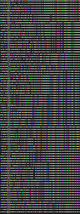
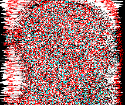

/THOUGHTS/
Endless cognitive noise.

>THEY ALWAYS SAY "CLEAR YOUR MIND" BUT NEVER EXPLAIN HOW
This is an experimental area of the site, where I'm going to document my mental flow, and try and make gateways to my mind. Short thoughts that don't require much effort, or are just text
will be pasted here, but complex thoughts may get their own pages linked from here.
DATE:/10/8/2020/ TITLE: /EXPERIMENTAL PAGE/
DATE:/10/7/2020/ TITLE: /SUCCESSFUL FAILURE/
>I HAVE SEEN THE DARK UNIVERSE YAWNING AND THE PLANETS ROLL WITHOUT AIM
Not sure really what to say. Most of last month, and the start of this one has fucking sucked. I'll start with the good parts I suppose.
I managed to successfully install Arch Linux on my laptop, and the whole process has really rekindled my enthusiasm about computing. I also managed to program a dumb, but fun little python program that generates retarded memes.
I'll start with the worst of the bad side, but it requires a little backstory. I met this girl almost 2 and a half years ago. I was a very lonely person back then, being in a friendgroup with no-one I could emotionally relate too, also k-pop tards. This girl, let's call her Z, lived in another country, but we met at a mutual event. After the weeklong event, we had become pretty fast friends, and I'd also improved a lot socially by meeting the people from this event.
Before the event ended we promised eachother to send cat pictures everyday. It was a bit stupid, but a nice way to stay in touch. Ended up lasting a year. I should also mention this girl is heavily mentally ill, diagnosed autism, depression, and an eating disorder. Nonetheless, for a long time, we ended up pretty much talking everyday for multiple hours.
Now as you probably have already figured out, I ended up falling ass backwards in love. I eventually decided to ask. The response was basically a "maybe". IIf you've ever been a young, relatively lonely guy, a maybe doesn't kill hope, but it does increase desperation. I eventually asked her around 3 times in total I think, and was embroiled in a lot of mental anguish as my desperation and emotional dependency on this person increased.
Fast forward a year since meeting her, I decide it's enough. I cut contact for 30 days, and after that, we go back to being friends, because I feel like I killed my feelings sufficiently.
It's been a year and a half since then. She was buried very deep in my subconscious, and I still occasionally dream about her (Never in that way)
but I considered myself "cured". And then I heard she got into a relationship, and honestly it killed me inside. I felt nauseous. And eventually had to go home from an event I was attending due to the unexpected pain I was feeling. It really hurt.
The day after I got home, I began to feel sick. I got tested, and the results say I don't have covid, but this cold isn't making anything better.
Just as a final point, fuck those posters on 4chan that just use an attractive women as a post image.
DATE:/09/16/2020/ TITLE: /JOYS AND WOES OF TECH/
>MY COMPUTER IS DEAD, LONG LIVE MY COMPUTER
Well, I've been going down a tech rabbithole recently, and boy it's been both fun and infuriating. I've gone from "oh hey setting up a website is pretty cool" to ridding myself of windows in what feels like no time at all. Wrote a few fun python programs too along the way. A few days ago I tried installing Arch a few times, first one just didn't work, second try kinda did, third try mostly worked fine except the internet didn't work, and well... One my fourth attempt I ended up wiping the External drive I was installing it too, and my windows D: drive. I was using the external drive as a backup for a lot of stuff. And also a repository for warez. It was a pretty annoying loss, but I think I came out the better for it. I still had a lot of photos of my Ex on the backup, and I'll be honest, seeing those photos made me rethink a lot of choices. Choices that were right. Having those disappear is a weight off my shoulders, and deleting the largest drive on my laptop also gave me the excuse to fully move to linux, which is also pretty cool.
I'm going to continue trying to install Arch, because it looks really interesting to me, but for now I'm using EndeavorOS as my daily system, I'll change it after I figure Arch out though.
DATE:/08/28/2020/ TITLE: /ISOLATION/
>RABBIT HOLES ARE FUN
It was recently vacation where I was, and most of the people I'd consider friends went on holiday. During this time I was completely isolated for around 4 weeks.
While it certainly was not the most pleasant experience, it is fascinating the effects it has on the brain. At times I felt almost manic in my work ethic, and 2 days later I would spend
the entire day in bed, or on a chair; wondering what I'd do next.
My sleep "schedule" suffered heavily, I was almost on a constant loop of getting up extremely early, while going to bed extremely early, or the opposite. I would find myself often drinking a coffee at 12, or even 3am. Maybe this loop assisted the feeling of timelessness, and surreality.
During this time I was also keenly aware of my thoughts; they seemed to flow like a beam of images, data, and words at an incomprehendable speed. Never stopping, slowing down, or calming. Probably one of the reasons my sleep, even when on a schedule, tends towards being awful. Interestingly enough, this phenonmena wasn't something that had suddenly appeared, like a spectre on my mind, but something I was seemingly just noticing. Looking back, it's been present throughout my life, I always remember the same feeling being present when attempting to fall asleep at night. This constant mental humming, constantly processing, moving, creating. Full scenes, conversations, and concepts would appear in my mind, only to be replaced by something new a minute or even a second later.
While I think on some level I was always aware of it, the lack of external social stimulation, made it quiet enough for me to fully realize the extent of this feeling.
I'm out of isolation now, but the feeling still persists. Maybe I'm going mad.

END